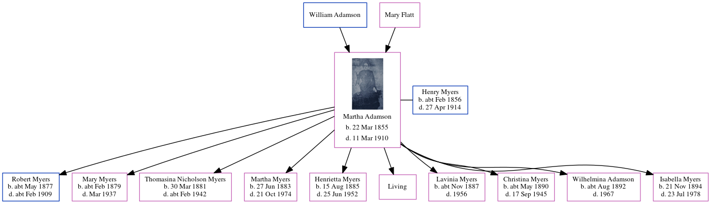

Robert Myers cMay 1877 - c1909
[ Home ] | [ Calendar ] | [ Surnames Index ] | [ Errors ] | [ Family History ]A general cartman and the child of Henry Myers (a steamboat man) and Martha Adamson, Robert Myers was born in North Shields, Northumberland, England c. May 18771,2,3,4,5,6,7,8.
During his life, he was living at South Street, North Shields, Tyne and Wear, England on 3 Apr 188110; and at Appleby Street in North Shields on 5 Apr 18911 - less than a mile from his sister Martha Sarah Nicholson who was living at 16 Appleby Street, Chirton, Tyne, Wear and on 31 Mar 19012.
He died c. Feb 1909 in Tynemouth, Tyne and Wear, England9.
Parents
- Henry Briscoe Nicholson was born c. Feb 1856
- Martha Sarah was born on 22 Mar 1855
Citations
- 1891 England, Wales & Scotland Census - Findmypast (was age 14 and the son of the head of the household)
- 1901 England, Wales & Scotland Census - Findmypast (was age 24 and the son of the head of the household)
- Volume: 10B; Page: 164; Line number: 184; Record set: England & Wales Deaths 1837-2007; Subcategory: Civil Deaths & Burials; Category: Birth, Marriage & Death (Parish Registers); Collections from: United Kingdom, England;
- ngdom, England;
- ingdom, England;
- 1881 England, Wales & Scotland Census - Findmypast
- ingdom, England;
- England & Wales births 1837-2006 - Findmypast
- Volume: 10B; Page: 164; Line number: 184; Record set: England & Wales Deaths 1837-2007; Subcategory: Civil Deaths & Burials; Category: Birth, Marriage & Death (Parish Registers); Collections from: United Kingdom, England; Volume: 10B; Page: 164; Line number: 184; Record set: England & Wales Deaths 1837-2007; Subcategory: Civil Deaths & Burials; Category: Birth, Marriage & Death (Parish Registers); Collections from: United Kingdom, England;
- Archive reference: RG11; Piece number: 5075; Folio: 31; Page: 53; Schedule: 981; HouseHoldID: 4924499; Record set: 1881 England, Wales & Scotland Census; Subcategory: Census; Category: Census, Land & Substitutes; Collections from: United Ki Archive reference: RG11; Piece number: 5075; Folio: 31; Page: 53; Schedule: 981; HouseHoldID: 4924499; Record set: 1881 England, Wales & Scotland Census; Subcategory: Census; Category: Census, Land & Substitutes; Collections from: United Kingdom, England; (was age 4 and the son of the head of the household)
- Archive reference: RG11; Piece number: 5075; Folio: 31; Page: 53; Schedule: 981; HouseHoldID: 4924499; Record set: 1881 England, Wales & Scotland Census; Subcategory: Census; Category: Census, Land & Substitutes; Collections from: United Ki Archive reference: RG11; Piece number: 5075; Folio: 31; Page: 53; Schedule: 981; HouseHoldID: 4924499; Record set: 1881 England, Wales & Scotland Census; Subcategory: Census; Category: Census, Land & Substitutes; Collections from: United Kingdom, England; (was age 4 and the son of the head of the household)
Media
England & Wales births 1837-2006 - BMD/B/1877/2/AZ/000405/037
England & Wales deaths 1837-2007 - BMD/D/1909/1/AZ/000299/184
Family Tree
Map
Generated by ged2site. Last updated on Jul 3, 2024
Known Issues
Can't find relationship with the home person
Location for 3 Apr 1881 (South Street, North Shields, Tyne and Wear, England) differs from mother's (2 South Street, North Shields, Tyne and Wear, England)
Martha Wood (née Myers) residence is same location probably should be recorded as the same address (' 16 Appleby Street, Chirton, Tyne and Wear, England'/' Appleby Street, North Shields, Tyne and Wear, England') in 1891
No records of living with anyone
The census for the year 5075 has been cited, but its information has not been used as a residence